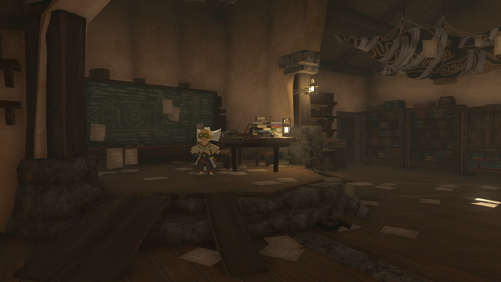
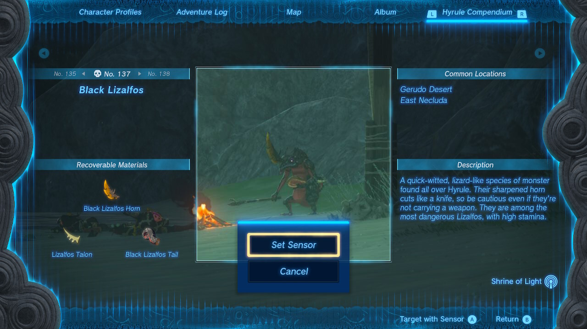
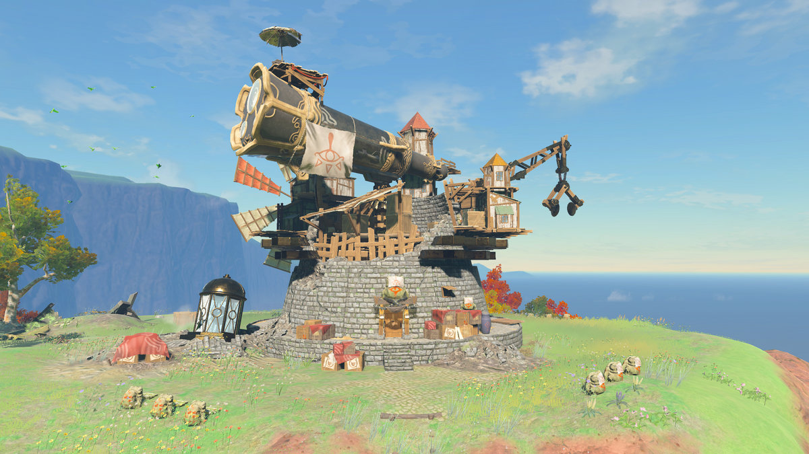

图：哈特诺村古代技术研究所——村东山顶上那栋房子，洛贝利的新家。
先说结论：先修气球，再装感应器
前置是主线「深穴中的谜团」——做完拿到蓝图能力、打败可盖第一次、回去向乔舒亚汇报，她给你热气球的设计图。回监视堡垒用蓝图修好洛贝利的热气球，他飞去哈特诺村。去村东山顶的研究所找他，他给普尔亚平板装上神庙感应器；跟着提示声往山下走，山坡下的洞里就是玛雅希希克神庙，激活后回去汇报，感应器永久生效，还能接后续三个发明任务。
| 阶段 | 要做的事 |
|---|---|
| 前置 | 主线「深穴中的谜团」：拿蓝图能力，打败可盖第一次，向乔舒亚汇报 |
| 修气球 | 监视堡垒用蓝图修好洛贝利的热气球，他飞去哈特诺村 |
| 装感应器 | 村东山顶的研究所找洛贝利，他给普尔亚平板装神庙感应器 |
| 找神庙 | 跟着提示声下山，山坡下的洞里激活玛雅希希克神庙 |
| 汇报 | 回研究所找洛贝利交谈，任务完成，感应器永久生效 |
接取与奖励
| 项目 | 内容 |
|---|---|
| 接取 | 完成主线「深穴中的谜团」拿到蓝图能力后，在监视堡垒找洛贝利交谈 |
| 位置 | 哈特诺村东边山顶 · 古代技术研究所，约 3778, -2127, 230 |
| 奖励 | 普尔亚平板获得神庙感应器功能；玛雅希希克神庙的祝福之光 |
| 后续 | 旅行奖章、英雄足迹模式、传感器+（找洛贝利接） |
任务总览
| 顺序 | 步骤 | 要点 |
|---|---|---|
| 1 | 先拿蓝图能力 | 通关任意一座神殿后找乔舒亚接「深穴中的谜团」 |
| 2 | 修好洛贝利的热气球 | 监视堡垒，用蓝图按设计图拼好 |
| 3 | 去研究所装感应器 | 村东山顶，把普尔亚平板交给洛贝利 |
| 4 | 跟着提示声找神庙 | 往山下走，瀑布边的洞口，砸开岩石进洞 |
| 5 | 回去汇报 | 回研究所找洛贝利交谈，任务完成 |
第一步：先拿蓝图能力
本任务接不了是正常的：得先推进主线。通关任意一座神殿后去监视堡垒找乔舒亚接「深穴中的谜团」，跟石像走到地底拿到蓝图能力，打败可盖第一次，回去汇报。乔舒亚会给你一张热气球的设计图。

图：深穴中的谜团——先做完这条主线拿到蓝图能力，洛贝利才会给你派任务。
第二步：修好洛贝利的热气球
监视堡垒里找洛贝利（乔舒亚旁边），他正为破热气球发愁。用蓝图能力按乔舒亚给的设计图把热气球拼好，他马上动身飞去哈特诺村。
第三步：去研究所装感应器
哈特诺村往东上山，山顶就是古代技术研究所（从村里走过去，或从拉聂尔山鸟望台往南滑翔）。进门找洛贝利，把普尔亚平板交给他，他装上神庙感应器，并让你出去试试：附近就有一座没去过的神庙。
第四步：跟着提示声找神庙
出门往山下走，感应器会响：离神庙越近响得越急，还能在地图界面按 Y 开关感应器。跟着声音走到山坡下，瀑布边有个洞口，入口有岩石堵着，用炸弹花或带岩石的武器砸开。进洞一直走到尽头就是玛雅希希克神庙（祝福神庙，不用解谜），宝箱里是魔法杖，开宝箱、调查拿祝福之光。

图：神庙入口——跟着提示声找到神庙，进去调查就能激活。
第五步：回去汇报
回研究所找洛贝利交谈，他把感应器的使用说明贴在墙上，任务完成。神庙感应器从此常驻普尔亚平板。之后再来找他，还能接旅行奖章、英雄足迹模式、传感器+三个发明任务。

图：图鉴感应器——后续任务「传感器+」解锁后，就能在图鉴里锁定想找的怪物与素材。

图：阿卡莱古代研究所——后续任务「旅行奖章」的试制品就在这里，打败门口的两名伊盖队成员才能拿到。
关键信息表
| 项目 | 内容 |
|---|---|
| 前置任务 | 主线「深穴中的谜团」：通关任意一座神殿后接，拿蓝图能力，打败可盖第一次，向乔舒亚汇报 |
| 研究所 | 哈特诺村东边山顶 · 古代技术研究所，约 3778, -2127, 230 |
| 神庙 | 玛雅希希克神庙（祝福神庙，不用解谜）；洞在山坡下瀑布边，入口岩石须砸开 |
| 感应器用法 | 靠近没去过的神庙会响，越近越急；地图界面按 Y 开关 |
| 后续任务 | 旅行奖章：去阿卡莱古代研究所拿试制品；英雄足迹模式：累计启动 15 座神庙；传感器+：用相机登记 5 种怪物 |
容易翻车的地方
- 没做「深穴中的谜团」就去找洛贝利——他不会派任务，先推进主线拿蓝图。
- 热气球拼不起来——用蓝图能力，按乔舒亚给的设计图拼，不是自己瞎拼。
- 感应器不响——它只对没去过的神庙响，而且跟你走的方向有关：原地转圈没用，朝声音变急的方向走；地图界面按 Y 可以开关。
- 洞口岩石砸不开——用炸弹花，或把岩石余料到武器上砸；别用拳头。
- 找错洞——洞口在山坡下瀑布边，别在山顶研究所周围转。
一句话总结
主线拿到蓝图后修好洛贝利的热气球，去哈特诺村东边山顶的研究所装上神庙感应器，跟着提示声下山进洞激活玛雅希希克神庙——从此找神庙再也不用瞎转悠。